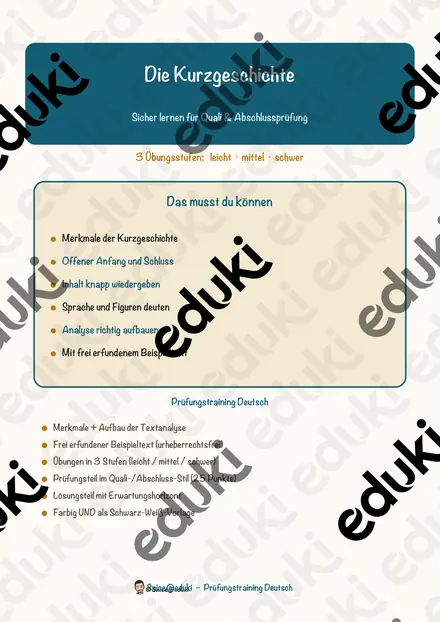
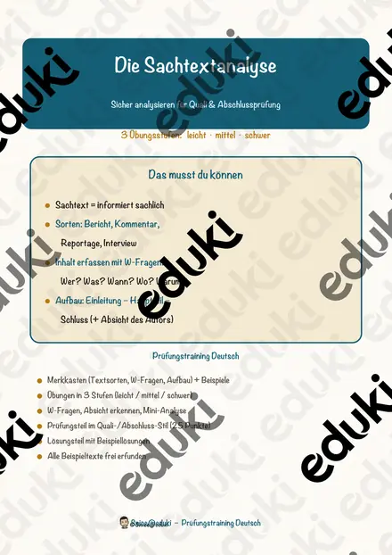
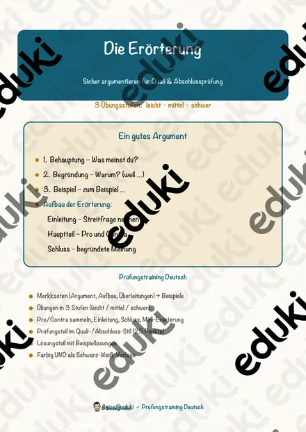

Die Gedichtanalyse – Prüfungstraining Deutsch (Klasse 9)
Mit diesem kompakten Trainingsheft bereiten sich deine Schülerinnen und Schüler gezielt und selbstständig auf die schriftliche Prüfung (Quali, Mittlerer Schulabschluss) im Bereich Gedichtanalyse vor. Das Material vermittelt den Aufbau einer Analyse, das Bestimmen von Strophen, Versen, Reimschema und Stilmitteln sowie eine kurze, begründete Deutung – mit einem prüfungsnahen, punktebewerteten Abschlussteil.SOFORT EINSETZBAR und in DREI ÜBUNGSSTUFEN (leicht ★ / mittel ★★ / schwer ★★★) angelegt, sodass alle Kinder einer Lerngruppe am selben Thema differenziert arbeiten können.WICHTIG: Das komplette Material liegt in FARBE und als drucksparende SCHWARZ-WEISS-Variante vor. Alle im Heft verwendeten Gedichte sind eigens verfasst und damit urheberrechtlich unbedenklich.DAS IST ENTHALTEN
- Merkkästen (Aufbau der Analyse, Reimschema, wichtige Stilmittel)
- Beispiele (Reimschema bestimmen, Stilmittel erkennen)
- Übungen in 3 Stufen: ★ Begriffe und Reimschema, ★★ Stilmittel erkennen und Einleitungssatz, ★★★ Deutung und Mini-Analyse
- Prüfungsteil im Quali-/Abschluss-Stil (25 Punkte, mit Bewertungsvorschlag)
- Lösungsteil mit Beispiellösungen (nur für die Lehrkraft)
- Hinweise für Lehrkräfte mit LehrplanbezugINHALTLICHER SCHWERPUNKTDen Aufbau einer Gedichtanalyse (Einleitung, Hauptteil, Schluss) anwenden; Strophen und Verse bestimmen; das Reimschema erkennen (Paarreim, Kreuzreim, umarmender Reim); wichtige sprachliche Bilder benennen (Vergleich, Metapher, Personifikation, Alliteration); den Inhalt im Präsens wiedergeben und eine begründete Deutung mit Versangaben formulieren.ABGEDECKTE KOMPETENZEN
- ein Gedicht nach Inhalt und Form untersuchen
- Reimschema und Stilmittel sicher bestimmen
- eine begründete Deutung schreiben
- gezielte Vorbereitung auf die schriftliche Abschlussprüfung (Quali / MSA)Geeignet für Übungsphasen, Wochenplan, Vertretungsstunden, Freiarbeit, Nachhilfe und gezielte Prüfungsvorbereitung. Der Prüfungsteil kann als Probeprüfung geschrieben werden.
Ähnliche Materialien

Die Kurzgeschichte – Prüfungstraining Deutsch (Klasse 9)

Die Sachtextanalyse – Prüfungstraining Deutsch (Klasse 9)

Die Erörterung – Prüfungstraining Deutsch (Klasse 9)

Die Charakterisierung – Prüfungstraining Deutsch (Klasse 8)

Die Ballade – Prüfungstraining Deutsch (Klasse 8)

Die Fabel – Prüfungstraining Deutsch (Klasse 8)

Groß- und Kleinschreibung – Prüfungstraining Deutsch (Klasse 8)